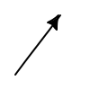
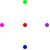

6.0.0.2
Representation
1 Representation
This section describes the representation of the MetaPict concepts.
|
| #:extra-constructor-name make-pt) |
| x : real? |
| y : real? |
The
pt structure represents a point with coordinates
(
x,y)
in the current coordinate system.
| > (def A (pt 3 4)) |
|
| > A |
(pt 3 4) |
| > (defm (pt x y) A) |
|
| > (list x y) |
'(3 4) |
| > (penwidth 4 (draw (pt 0 0) (pt 1/2 1/2) (pt 1 0))) |

|
|
| #:extra-constructor-name make-vec) |
| x : real? |
| y : real? |
The
vec structure represents a mathematical vector with coordinates
(
x,y)
in the current coordinate system.
| > (def v (vec 3 4)) |
|
| > v |
(vec 3 4) |
| > (defm (vec x y) v) |
|
| > (list x y) |
'(3 4) |
| > (def O origo) |
|
| > (with-window (window -1 5 -1 5) | | (ahlength (px 5)) | | (draw-arrow (curve O -- (pt+ O v)))) |
|
 |
| (struct | | bez (p0 p1 p2 p3) |
|
| #:extra-constructor-name make-bez) |
| p0 : pt? |
| p1 : pt? |
| p2 : pt? |
| p3 : pt? |
The
bez structure represents a cubic Bezier curve with start point
in
p0, end point in
p3 and control points in
p1 and
p2.
| > (with-window (window -1 6 -1 6) | | (draw (bez (pt 0 0) (pt 0 1) (pt 2 3) (pt 5 0)))) |
|
 |